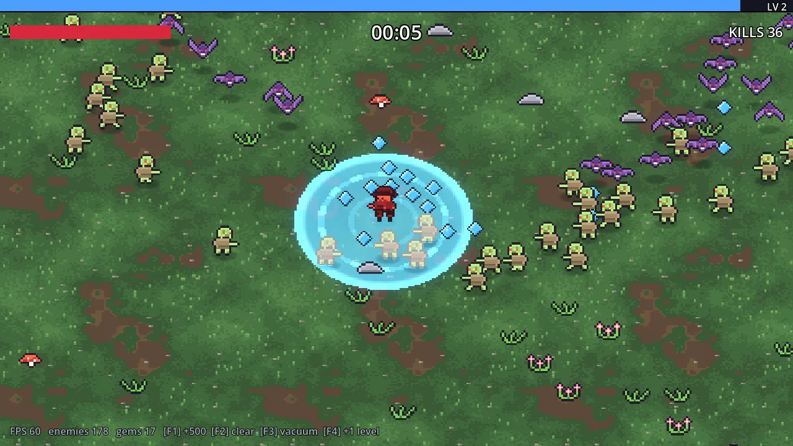
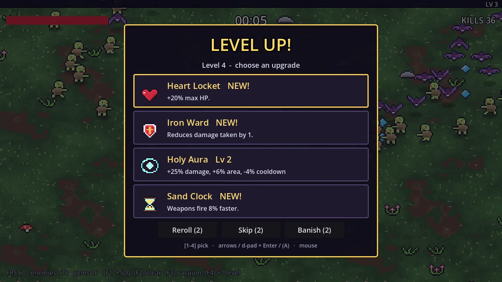

XP, Stats dan Level Up
Game jadi game ketika ada pilihan. Musuh mati menjatuhkan gem, gem memberi XP, XP memberi level, dan tiap level pemain memilih satu dari tiga upgrade. Di balik itu ada dua sistem yang dipakai sampai Fase 8: Stats dan pause.


GemField: pola yang sama, objek yang berbeda
Gem dibuat persis seperti musuh: packed array paralel, swap-with-last, satu MultiMesh, layout buffer 16 float yang sama, shader billboard yang sama. Itu keuntungan pola yang konsisten: kamu sudah tahu 80% kode pickups/gem_field.gd sebelum membacanya.
- Di
main.tscntambahkan Node3DGemField, tempelpickups/gem_field.gd, isisheet=art/sprites/gems.png(baris = tier warna, kolom = frame kilau). - Hubungkan sinyal kematian di
Game._ready:swarm.enemy_died.connect(_on_enemy_died), lalu di handler panggilgems.drop(at, data.xp_value). - Di
Game._processsetelahflush_dead():var xp := gems.tick(dt, player.pos2, magnet).
Sinyal adalah cara node memberi tahu "sesuatu terjadi" tanpa tahu siapa yang mendengar. EnemySwarm mendeklarasikan signal enemy_died(position, data, flags) dan memanggil enemy_died.emit(...). Game yang menyambungkan sinyal itu ke fungsinya. Swarm tidak perlu tahu ada gem, efek, atau peti. Kalau besok kamu menambah sistem statistik, cukup sambungkan satu handler lagi.
78func drop(at: Vector2, xp: float) -> void:
79 if xp <= 0.0:
80 return
81 if count >= max_gems:
82 if _bank < 0:
83 _bank = randi() % count
84 value[_bank] += xp
85 tier[_bank] = _tier_of(value[_bank])
86 return
87 var i := count
88 count += 1
89 pos[i] = at
90 vel[i] = Vector2.ZERO
91 value[i] = xp
92 tier[i] = _tier_of(xp)
93 phase[i] = randf() * hframes
94 pulled[i] = 0
95
96
97## Pull every gem toward the player regardless of distance (vacuum pickup).
98func attract_all() -> void:
99 for i in count:
100 pulled[i] = 1
101
102
103## Moves gems, collects those touching `target`; returns collected XP.
104func tick(dt: float, target: Vector2, magnet: float) -> float:
105 _time += dt
106 var collected := 0.0
107 var m2 := magnet * magnet
108 var c2 := collect_radius * collect_radius
109 var i := 0
110 while i < count:
111 var d := target - pos[i]
112 var l2 := d.length_squared()
113 if pulled[i] == 0:
114 if l2 >= m2:
115 i += 1
116 continue
117 pulled[i] = 1
118 if l2 > 0.0001:
119 vel[i] = -d * (pop_speed / sqrt(l2))
120 if l2 <= c2:
121 collected += value[i]
122 _remove_at(i)
123 continue
124 var dist := sqrt(l2)
125 var v := (vel[i] + d * (pull_accel * dt / dist)).limit_length(max_pull_speed)
126 if v.dot(d) > 0.0 and v.length() * dt >= dist:
127 collected += value[i]
128 _remove_at(i)
129 continue
130 vel[i] = v
131 pos[i] += v * dt
132 i += 1
133 return collected- dropDi atas
max_gems(400), gem baru tidak dibuat; nilainya ditambahkan ke satu gem "bank" acak yang naik tier. Jumlah objek tetap terbatas walau 300 musuh mati per detik, dan pemain tetap mendapat semua XP-nya. - tickGem diam sampai
l2 < magnet²(membandingkan kuadrat jarak, tanpa akar). Saat tertangkap ia diberi kecepatan menjauh (-d · pop_speed), lalu tiap frame dipercepat menuju pemain. Hasilnya lompatan kecil yang memuaskan sebelum tersedot. - overshootKalau langkah frame ini lebih panjang dari jarak tersisa (
v.length() * dt >= dist), gem langsung dikoleksi. Tanpa ini gem cepat bisa melewati pemain dan berputar-putar. - whileLoop memakai
while i < countdan tidak menaikkanisetelah menghapus, karena slotisekarang berisi gem terakhir yang belum diproses.
Di upload(), indeks 7 (origin.y) diisi gelombang sinus kecil: gem mengambang naik turun tanpa satu baris kode animasi pun di sisi CPU selain angka itu.
Stats dan StatModifier
Begitu ada upgrade, pertanyaan desainnya: bagaimana "+10% damage" dari relik, "+10 max HP" dari karakter, dan "+15% damage" dari toko digabung tanpa saling menimpa? Jawaban proyek ini: satu rumus untuk semua stat.
nilai = (base + Σflat) × (1 + Σpercent). Semua persen pada satu stat dijumlah dulu. Dua relik +10% = +20%, bukan 1,1 × 1,1 = +21%. Ini membuat tooltip mudah dihitung pemain dan mencegah stat meledak eksponensial saat ada puluhan sumber bonus. Karakter hanya mengubah base; semua yang lain adalah modifier.
1class_name StatModifier
2extends Resource
3## One additive change to a Stats entry. Passives, characters and (phase 8)
4## shop power-ups are lists of these.
5
6@export var stat: Stats.Id
7@export var flat := 0.0
8## 0.1 = +10%. All percents on a stat are summed before multiplying.
9@export var percent := 0.0 67var _base := PackedFloat32Array(DEFAULT_BASE)
68var _flat := PackedFloat32Array()
69var _percent := PackedFloat32Array()
70var _value := PackedFloat32Array()
71
72
73func _init() -> void:
74 var n := DEFAULT_BASE.size()
75 _flat.resize(n)
76 _percent.resize(n)
77 _value.resize(n)
78 for id in n:
79 _recompute(id)
80
81
82func value(id: Id) -> float:
83 return _value[id]
84
85
86func int_value(id: Id) -> int:
87 return int(_value[id])
88
89
90func set_base(id: Id, v: float) -> void:
91 _base[id] = v
92 _recompute(id)
93 changed.emit()
94
95
96## Pass `times = -1` to remove a modifier added earlier.
97func add_modifier(m: StatModifier, times: int = 1) -> void:
98 _flat[m.stat] += m.flat * times
99 _percent[m.stat] += m.percent * times
100 _recompute(m.stat)
101 changed.emit()
102
103
104func _recompute(id: int) -> void:
105 var v := (_base[id] + _flat[id]) * (1.0 + _percent[id])
106 _value[id] = maxf(v, MIN_COOLDOWN) if id == Id.COOLDOWN else maxf(v, 0.0)- enum
Stats.Iddisimpan sebagai angka di file.tres(stat = 0= MIGHT). Karena itu ada aturan: tambah id baru di akhir, jangan pernah mengurutkan ulang. Menyisipkan di tengah akan diam-diam mengubah arti semua file data. - _valueNilai akhir di-cache.
value(id)hanya membaca array, jadi senjata boleh memanggilnya tiap frame. Hitung ulang terjadi hanya saat modifier ditambah. - times
add_modifier(m, -1)membatalkan modifier; Fase 8 memakaitimes = leveluntuk upgrade toko.
Relik (PassiveData) hanya daftar modifier. Ini isi lengkap data/passives/bloodied_blade.tres:
1[gd_resource type="Resource" script_class="PassiveData" format=3]
2
3[ext_resource type="Script" path="res://passives/passive_data.gd" id="1_script"]
4[ext_resource type="Script" path="res://core/stat_modifier.gd" id="2_mod"]
5[ext_resource type="Texture2D" path="res://art/icons/bloodied_blade.png" id="3_icon"]
6
7[sub_resource type="Resource" id="Resource_mod"]
8script = ExtResource("2_mod")
9stat = 0
10percent = 0.1
11
12[resource]
13script = ExtResource("1_script")
14id = &"bloodied_blade"
15display_name = "Bloodied Blade"
16description = "+10% damage."
17icon = ExtResource("3_icon")
18max_level = 5
19modifiers = Array[ExtResource("2_mod")]([SubResource("Resource_mod")])Senjata tidak membaca data.damage secara langsung, tapi lewat helper di kelas dasar Weapon yang menggabungkan data senjata dan Stats pemain. Satu tempat untuk rumus berarti semua senjata otomatis ikut relik baru.
17func damage() -> float:
18 return data.damage * (1.0 + data.level_damage * (level - 1)) * stats.value(Stats.Id.MIGHT)
19
20
21func area() -> float:
22 return data.area * (1.0 + data.level_area * (level - 1)) * stats.value(Stats.Id.AREA)
23
24
25func cooldown() -> float:
26 var lv := maxf(0.2, 1.0 - data.level_cooldown * (level - 1))
27 return data.cooldown * lv * stats.value(Stats.Id.COOLDOWN)
28
29
30func amount() -> int:
31 return data.amount + stats.int_value(Stats.Id.AMOUNT)Kurva XP
1class_name Leveling
2extends RefCounted
3## Player level and XP. Overflow carries into the next level, so one big gem
4## can grant several levels; add() returns how many.
5
6var level := 1
7var xp := 0.0
8var xp_to_next := xp_required(1)
9
10
11## XP needed to go from `lv` to `lv + 1`: +10 per level until 20,
12## +13 until 40, +16 after that.
13static func xp_required(lv: int) -> float:
14 if lv < 20:
15 return 5.0 + 10.0 * (lv - 1)
16 if lv < 40:
17 return 195.0 + 13.0 * (lv - 20)
18 return 455.0 + 16.0 * (lv - 40)
19
20
21func add(amount: float) -> int:
22 xp += amount
23 var gained := 0
24 while xp >= xp_to_next:
25 xp -= xp_to_next
26 level += 1
27 gained += 1
28 xp_to_next = xp_required(level)
29 return gained
30
31
32func progress() -> float:
33 return xp / xp_to_nextKurvanya linear bertahap: +10 XP per level sampai level 20, +13 sampai 40, lalu +16. Level awal cepat (level 2 cukup 5 XP, satu-dua gerombolan), lalu melambat. add() memakai while, jadi satu gem bank berisi 2000 XP bisa memberi beberapa level sekaligus, dan fungsi itu mengembalikan jumlahnya. Game menyimpannya di antrian pending_levels.
Pause: process_mode
Saat get_tree().paused = true, Godot berhenti memanggil _process, _input, timer, dan tween pada node dengan process_mode = PAUSABLE. Mode default INHERIT mengikuti induk. Node dengan ALWAYS tetap jalan. Jadi layar level up (CanvasLayer) diberi process_mode = ALWAYS supaya bisa menerima input dan menjalankan tween pop-in walau dunia berhenti.
Game sendiri juga ALWAYS (ia perlu menerima tombol pause untuk unpause), lalu memeriksa sendiri di baris pertama _process:
111func _ready() -> void:
112 # Game must receive input while paused (to unpause); _process checks pause itself.
113 process_mode = Node.PROCESS_MODE_ALWAYS147func _process(delta: float) -> void:
148 if get_tree().paused:
149 return
150 if _hit_stop > 0.0:
151 _hit_stop -= delta
152 camera_rig.tick(delta, player.global_position)
153 return
154 var dt := minf(delta, 1.0 / 20.0)
155 elapsed += dt
156 _boss_crit_cd -= dt
157
158 player.tick(dt)
159 Audio.listener = player.pos2
160 swarm.tick(dt, player.pos2, enemy_shots)
161
162 var contact := swarm.collide_player(player.pos2, player.radius)
163 contact = maxf(contact, enemy_shots.tick(dt, player.pos2, player.radius))
164 if contact > 0.0 and not player.is_dead:
165 var before := player.hp
166 player.take_damage(contact)
167 if player.hp < before:
168 camera_rig.add_shake(contact_shake)
169 numbers.add(player.pos2, before - player.hp, DamageNumberField.HURT)
170 Audio.play_sfx(&"player_hurt")
171
172 for w in player.weapons:
173 w.tick(dt, self)
174 projectiles.view_rect = camera_rig.ground_view_rect()
175 projectiles.tick(dt, swarm, player.pos2)
176 if swarm.boss_crit:
177 swarm.boss_crit = false
178 if _boss_crit_cd <= 0.0:
179 _boss_crit_cd = boss_crit_cooldown
180 hit_stop(boss_crit_hit_stop)
181
182 # One hit sound per frame at most (Audio rate-limits it further).
183 if swarm.hits_this_frame > 0:
184 swarm.hits_this_frame = 0
185 Audio.play_sfx(&"hit")
186 swarm.flush_dead()
187 var magnet := player.stats.value(Stats.Id.MAGNET)
188 var xp := gems.tick(dt, player.pos2, magnet)
189 if xp > 0.0:
190 Audio.play_sfx(&"gem")
191 pending_levels += leveling.add(xp * player.stats.value(Stats.Id.GROWTH))
192 var got := pickups.tick(dt, player.pos2, magnet)
193 for k in got.size():
194 _on_pickup(pickups.types[got[k]], pickups.collected_at[k])
195 director.tick(dt, self)
196 breakables.tick(dt, self)
197 numbers.tick(dt)
198 effects.tick(dt)
199 swarm.upload()
200 gems.upload()
201 pickups.upload()
202 projectiles.upload()
203 enemy_shots.upload()
204 effects.upload()
205 numbers.upload()
206
207 camera_rig.tick(dt, player.global_position)
208 ground.position = Vector3(player.pos2.x, 0.0, player.pos2.y)
209 decor.tick(player.pos2)
210 hud.refresh(self)
211
212 if is_over:
213 return
214 if pending_levels > 0:
215 get_tree().paused = true
216 Audio.play_sfx(&"level_up")
217 _offer_choices()
218 elif pending_chests > 0:
219 get_tree().paused = true
220 _open_chest()
221
222
223func _unhandled_input(event: InputEvent) -> void:
224 if level_up.is_open or chest_screen.is_open or SceneFader.busy:
225 return
226 if event.is_action_pressed(&"pause") and not is_over and not pause_menu.is_open:
227 get_viewport().set_input_as_handled()
228 _set_paused(true)
229 elif event.is_action_pressed(&"restart") and pause_menu.is_open:
230 restart()
231 elif OS.is_debug_build() and event is InputEventKey and event.pressed and not event.echo:
232 match event.keycode:
233 KEY_F1:
234 director.spawn_ring(self, 500)
235 KEY_F2:
236 swarm.clear()
237 KEY_F3:
238 gems.attract_all()
239 KEY_F4:
240 pending_levels += leveling.add(leveling.xp_to_next - leveling.xp)
241 KEY_F5:
242 debug_max_weapons()
243 KEY_F6:
244 pickups.drop(player.pos2 + player.aim * 2.0, chest_pickup)
245 KEY_4, KEY_5, KEY_6, KEY_7, KEY_8, KEY_9:
246 var list := debug_pickup_types()
247 var n: int = event.keycode - KEY_4
248 if n < list.size():
249 pickups.drop(player.pos2 + player.aim * 2.0, list[n])
250 KEY_B:
251 debug_breakables()
252 KEY_F7:
253 debug_evolution_passives()
254 KEY_PAGEUP:
255 director.skip_to(self, elapsed + 60.0)
256 KEY_1:
257 director.skip_to(self, 10.0 * 60.0 - 3.0)
258 KEY_2:
259 director.skip_to(self, 20.0 * 60.0 - 3.0)
260 KEY_3:
261 director.skip_to(self, director.table.final_minute * 60.0 - 3.0)
262 KEY_E:
263 director.spawn_elite(self, director.table.entries[0].enemies[0])
264 KEY_H:
265 hud.toggle_debug_keys()
266
267
268func _set_paused(on: bool) -> void:
269 get_tree().paused = on
270 if on:
271 pause_menu.open(self)
272 else:
273 pause_menu.close()
274
275
276func restart() -> void:
277 _end_run()
278 SceneFader.reload()
279
280
281func quit_to_title() -> void:
282 _end_run()
283 SceneFader.change_scene("res://scenes/title.tscn")
284
285
286## Banks the run into SaveData exactly once (death, restart or quitting).
287func _end_run() -> RunReward:
288 if run_reward == null:
289 run_reward = SaveData.bank_run(coins, elapsed, kills, director.final_phase)
290 return run_reward
291
292
293func _apply_settings() -> void:
294 camera_rig.shake_enabled = Settings.screen_shake
295 numbers.enabled = Settings.damage_numbers
296
297
298## Debug: the pickups keys 4..9 drop (every type except the chest, F6).
299func debug_pickup_types() -> Array[PickupData]:
300 var out: Array[PickupData] = []
301 for t in pickups.types:
302 if t != chest_pickup:
303 out.append(t)
304 return out
305
306
307## Debug: one of each breakable on a small arc ahead of the player.
308func debug_breakables() -> void:
309 var n := breakables.types.size()
310 for k in n:
311 var a := player.aim.angle() + (k - (n - 1) * 0.5) * 0.45
312 breakables.spawn(self, breakables.types[k], player.pos2 + Vector2.from_angle(a) * 4.0)
313
314
315## Debug: every weapon in the pool (while slots last) at max level.
316func debug_max_weapons() -> void:
317 for data in upgrade_pool.weapons:
318 if upgrade_pool.owns_line(player, data) and player.weapon_for(data) == null:
319 continue # already evolved
320 var w := player.weapon_for(data)
321 if w == null:
322 if player.weapons.size() >= Player.MAX_WEAPONS:
323 continue
324 w = player.add_weapon(data)
325 w.level = data.max_level
326
327
328## Debug: the passive each evolution needs, for weapons the player holds
329## (while passive slots last).
330func debug_evolution_passives() -> void:
331 for evo in upgrade_pool.evolutions:
332 if player.weapon_for(evo.base) == null or player.passives.has(evo.passive):
333 continue
334 if player.passives.size() >= Player.MAX_PASSIVES:
335 return
336 player.add_passive(evo.passive)
337
338
339## Level the current screen is for: with several queued, the oldest first.
340func level_being_chosen() -> int:
341 return leveling.level - pending_levels + 1
342
343
344func _offer_choices() -> void:
345 var n := 3
346 if randf() < extra_choice_chance * player.stats.value(Stats.Id.LUCK):
347 n = 4
348 var offers := upgrade_pool.roll(player, banished, n)
349 level_up.present(offers, level_being_chosen(), rerolls_left, skips_left, banishes_left)
350
351
352func _finish_level() -> void:
353 pending_levels -= 1
354 if pending_levels > 0:
355 _offer_choices()
356 else:
357 level_up.close()
358 get_tree().paused = false
359
360
361func _on_offer_picked(offer: UpgradeOffer) -> void:
362 offer.apply(player)
363 _finish_level()
364
365
366func _on_reroll() -> void:
367 if rerolls_left > 0:
368 rerolls_left -= 1
369 _offer_choices()
370
371
372func _on_skip() -> void:
373 if skips_left > 0:
374 skips_left -= 1
375 _finish_level()
376
377
378func _on_banish(offer: UpgradeOffer) -> void:
379 if banishes_left > 0 and offer.item != null:
380 banishes_left -= 1
381 banished.append(offer.item)
382 _offer_choices()
383
384
385func _on_enemy_died(at: Vector2, data: EnemyData, flags: int) -> void:
386 var luck := player.stats.value(Stats.Id.LUCK)
387 if flags & EnemySwarm.PROP:
388 effects.spawn(at, data.death_effect, 1.3)
389 effects.spawn(at, EffectField.Fx.SMOKE, 1.0)
390 var loot := (data as BreakableData).drops
391 if loot != null:
392 var item := loot.roll(luck)
393 if item != null:
394 pickups.drop(at, item)
395 return
396 kills += 1
397 kills_by_type[data] = kills_by_type.get(data, 0) + 1
398 Audio.play_sfx(&"kill", at)
399 var xp := data.xp_value
400 if flags & EnemySwarm.ELITE:
401 xp *= director.table.elite_xp_mult
402 gems.drop(at, xp)
403 var fx_scale := data.scale * (2.0 if data.large_sprite else 1.0)
404 if flags & EnemySwarm.BOSS:
405 fx_scale *= boss_effect_scale
406 effects.spawn(at, EffectField.Fx.EXPLOSION, 5.0, 0.6)
407 camera_rig.add_shake(boss_death_shake)
408 hit_stop(boss_death_hit_stop)
409 elif flags & EnemySwarm.ELITE:
410 fx_scale *= elite_effect_scale
411 effects.spawn(at, data.death_effect, fx_scale)
412 if flags & (EnemySwarm.ELITE | EnemySwarm.BOSS):
413 pickups.drop(at, chest_pickup)
414 elif chest_every_kills > 0 and kills % chest_every_kills == 0:
415 pickups.drop(at, chest_pickup)
416 elif enemy_drops != null:
417 var item := enemy_drops.roll(luck)
418 if item != null:
419 pickups.drop(at, item)
420
421
422func _on_pickup(data: PickupData, at: Vector2) -> void:
423 effects.spawn(at, data.collect_effect, 1.0, 0.35, 0.2)
424 match data.effect:
425 PickupData.Effect.CHEST:
426 pending_chests += 1
427 Audio.play_sfx(&"pickup")
428 PickupData.Effect.HEAL:
429 var before := player.hp
430 player.heal(player.max_hp * data.amount)
431 numbers.add(player.pos2, player.hp - before, DamageNumberField.HEAL)
432 Audio.play_sfx(&"heal")
433 PickupData.Effect.MAGNET:
434 gems.attract_all()
435 pickups.attract_all()
436 Audio.play_sfx(&"pickup")
437 PickupData.Effect.BOMB:
438 detonate_bomb(player.pos2, data.amount * director.hp_scale())
439 PickupData.Effect.COIN:
440 add_coins(data.amount)
441 Audio.play_sfx(&"coin")
442
443
444## Run coins, scaled by GREED; fractions carry over to the next pickup.
445func add_coins(amount: float) -> void:
446 _coin_frac += amount * player.stats.value(Stats.Id.GREED)
447 var whole := floori(_coin_frac + 0.0001)
448 coins += whole
449 _coin_frac -= whole
450
451
452## Blessed bomb: `damage` to every enemy and prop within bomb_radius (bosses
453## take bomb_boss_fraction of it), clears enemy shots, big blast + shake.
454func detonate_bomb(at: Vector2, damage: float) -> void:
455 for j in swarm.query_circle(at, bomb_radius):
456 var d := damage * (bomb_boss_fraction if swarm.flags[j] & EnemySwarm.BOSS else 1.0)
457 var push := (swarm.pos[j] - at).normalized() * bomb_knockback
458 swarm.damage_enemy(j, d, push)
459 enemy_shots.clear()
460 effects.spawn(at, EffectField.Fx.EXPLOSION, 7.0, 0.55)
461 for k in 12:
462 var p := at + Vector2.from_angle(randf() * TAU) * randf_range(2.0, bomb_radius * 0.55)
463 effects.spawn(p, EffectField.Fx.EXPLOSION, randf_range(2.0, 3.5), randf_range(0.35, 0.55))
464 camera_rig.add_shake(bomb_shake)
465 hit_stop(bomb_hit_stop)
466 Audio.play_sfx(&"bomb")
467
468
469## Freezes the simulation for `seconds` (rendering and camera shake go on).
470func hit_stop(seconds: float) -> void:
471 _hit_stop = maxf(_hit_stop, seconds)
472
473
474## Rolls and applies one chest's rewards, then shows them.
475func _open_chest() -> void:
476 var rewards: Array[UpgradeOffer] = []
477 for k in chest_item_count():
478 var offer := upgrade_pool.chest_reward(player, banished)
479 if offer == null:
480 break
481 offer.apply(player)
482 rewards.append(offer)
483 if rewards.is_empty():
484 var heal := UpgradeOffer.for_heal(upgrade_pool.heal_icon)
485 heal.apply(player)
486 rewards.append(heal)
487 hud.refresh(self) # the tree is paused: show the new loadout behind the screen
488 Audio.play_sfx(&"chest_open")
489 chest_screen.present(rewards)
490
491
492func chest_item_count() -> int:
493 var luck := player.stats.value(Stats.Id.LUCK)
494 var r := randf()
495 if r < chest_five_chance * luck:
496 return 5
497 if r < (chest_five_chance + chest_three_chance) * luck:
498 return 3
499 return 1
500
501
502func _on_chest_closed() -> void:
503 pending_chests -= 1
504 if pending_chests > 0:
505 _open_chest()
506 else:
507 chest_screen.close()
508 get_tree().paused = false
509
510
511func _on_player_died() -> void:
512 if revivals_left > 0:
513 _revive()
514 return
515 is_over = true
516 get_tree().paused = true
517 _end_run()
518 hud.refresh(self)
519 Audio.stop_music(0.6)
520 Audio.play_sfx(&"game_over")
521 game_over.present(self)
522
523
524## Spends a REVIVAL charge: back on your feet, nearby enemies and shots blown away.
525func _revive() -> void:
526 revivals_left -= 1
527 player.revive(revive_hp, revive_invuln)
528 for j in swarm.query_circle(player.pos2, revive_radius):
529 if not swarm.flags[j] & (EnemySwarm.BOSS | EnemySwarm.PROP):
530 swarm.knock[j] = (swarm.pos[j] - player.pos2).normalized() * swarm.max_knock
531 enemy_shots.clear()
532 effects.spawn(player.pos2, EffectField.Fx.HEAL, 5.0, 0.7)
533 effects.spawn(player.pos2, EffectField.Fx.SPARKLE, 4.0, 0.6)
534 camera_rig.add_shake(bomb_shake * 0.6)
535 hit_stop(bomb_hit_stop)
536 Audio.play_sfx(&"revive")